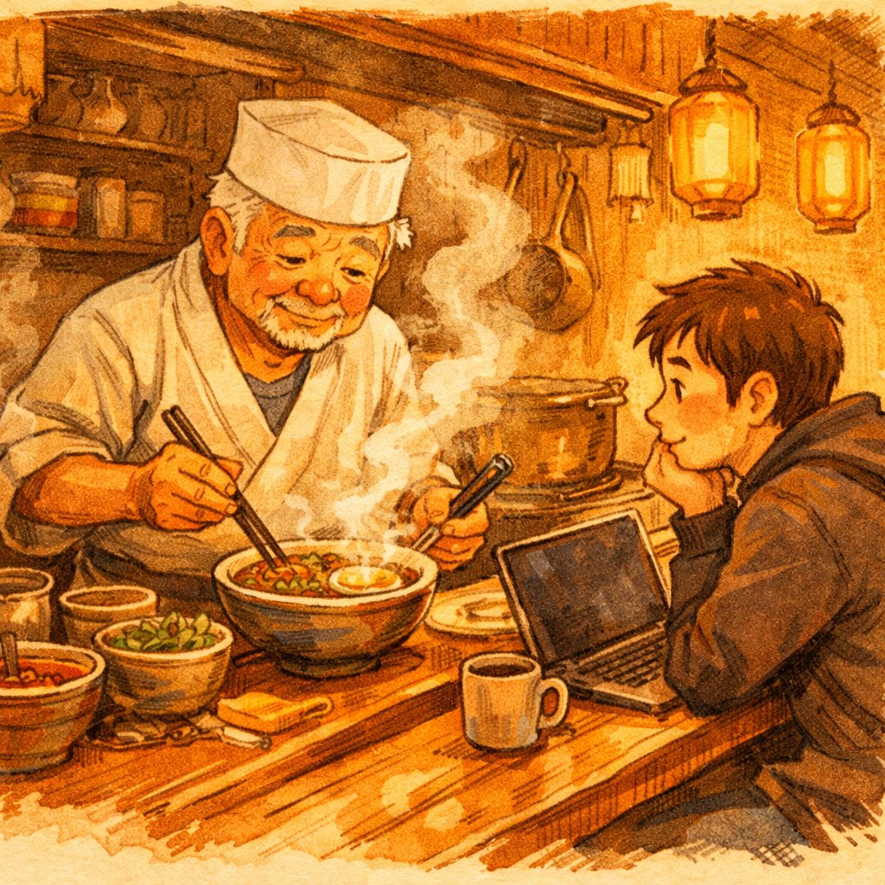
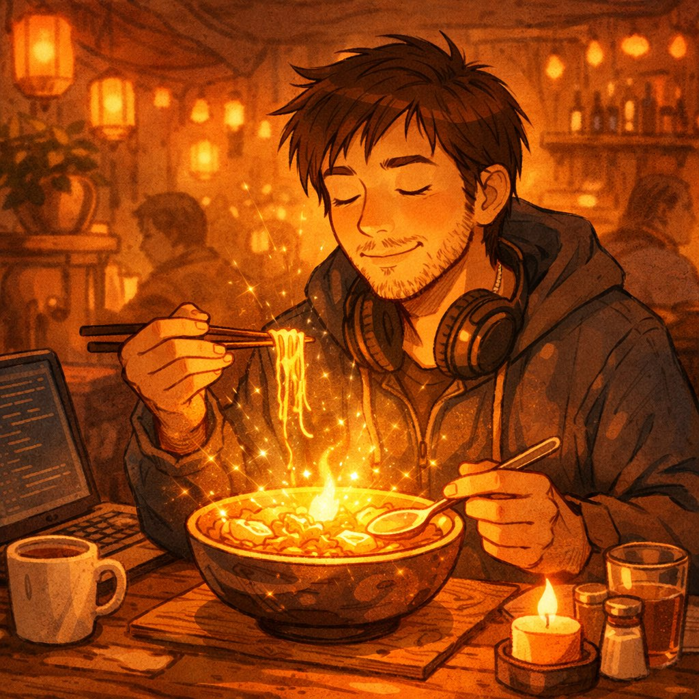
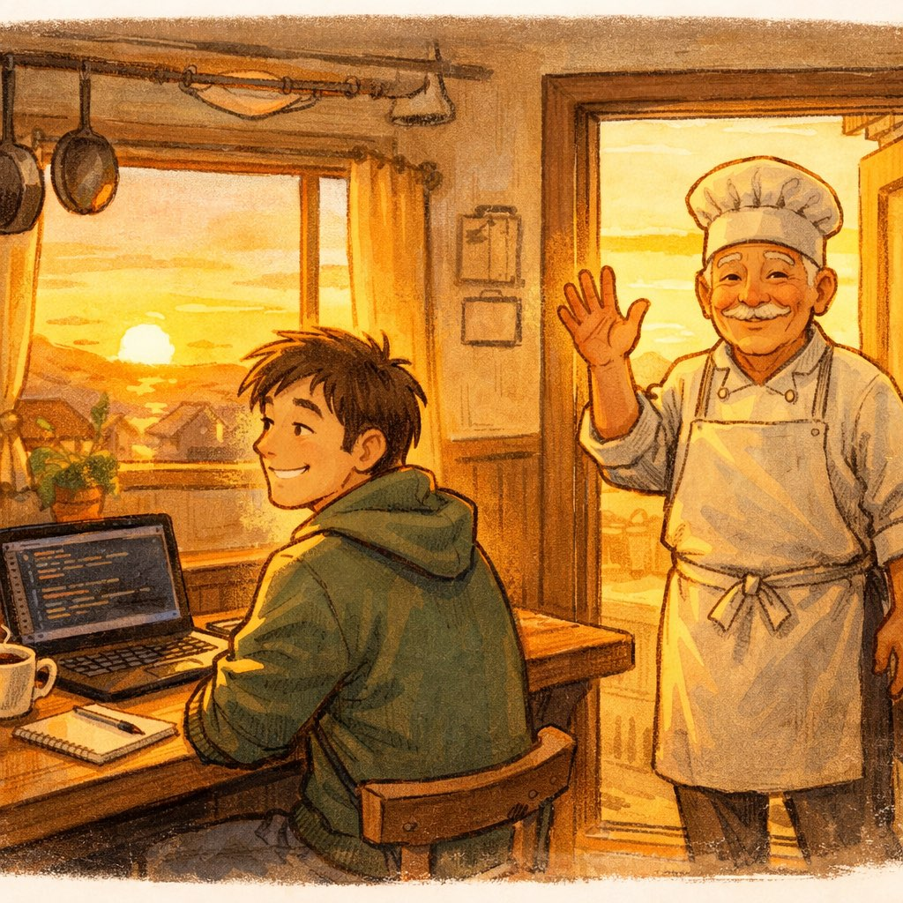

第一道菜
🍜 凌晨三点的味噌拉面
小林已经连续加班七天了。
不是那种"偶尔加到八九点"的加班，是那种"回家只是为了换衣服，闭眼就是代码"的加班。项目要上线了，但问题像韭菜一样——割完一茬又长一茬。
凌晨三点，他终于从工位上站起来。不是因为解决了问题，而是因为肚子在用报错的方式提醒他：系统资源不足，请及时补充。
他漫无目的地走在街上。便利店关了，外卖停了，连路灯都好像在打瞌睡。就在他准备回去泡方便面的时候——
一盏暖黄色的灯，从巷子深处亮了出来。
一间很小的食堂。没有招牌，只有门帘上写着两个字——"来吧"。推门进去，柜台后面站着一位老爷爷，围裙上沾着岁月和酱油的痕迹。
老爷爷
小伙子，凌晨三点还没吃饭，是工作没做完，还是心里有事做不完？
小林
都有吧……我写的代码全是问题，我不知道自己到底行不行。

一碗味噌拉面端上来。汤底浓郁得像液体黄金，面条根根分明，叉烧切得刚好——不多不少，每一片都恰到好处。热气缠绕着灯光，整个小店暖得像母亲的手。
小林吃了第一口，眼圈突然就红了。不是因为好吃——好吧，确实很好吃——而是因为他不记得上一次安安静静地坐下来吃一顿热饭是什么时候了。
第二道菜
🍳 写给过去的煎蛋饭
第二天凌晨，小林又来了。这次他不是因为加班，而是因为睡不着——他收到了大学室友的消息，室友刚跳槽去了大厂，年薪是他的三倍。
小林
老爷爷，你说……是不是有些人注定比另一些人走得快？
老爷爷做了一碗煎蛋饭。白米饭上铺一个煎蛋，淋一点酱油，撒几粒葱花。简单到不能再简单。
但那个煎蛋——蛋白边缘微焦，蛋黄流心，戳破的瞬间金色的液体缓缓流过米饭，每一粒米都被温柔地包裹住。
老爷爷
你知道吗，做煎蛋最重要的不是火候，是时机。早一秒太生，晚一秒太老。每个蛋都有自己最好的时刻。人也是。你的室友到了他的时刻，你的还没到，但一定会到。
小林低头扒了一口饭。蛋黄拌着酱油和白米饭的味道，竟然比昨晚的拉面还暖。
第三道菜
🍰 明天见的草莓蛋糕

第三天晚上，小林的项目上线了。
没有掌声，没有庆功宴，只有运维群里一句"部署成功"和PM发的"辛苦了"。小林关上电脑，发现窗外天已经亮了。
他又走进了那条巷子。推开门的时候，老爷爷正在擦柜台，像是一直在等他。
一块草莓蛋糕。奶油是手打的，草莓是当季的，蛋糕体松软得像云朵。
小林这才想起来——今天是自己的生日。他自己都忘了，但这块蛋糕仿佛记得。
老爷爷
你看，你一直在担心自己行不行。但七天前你坐在这里的时候，问题还没解决，现在已经上线了。你比你以为的要强得多。
老爷爷
那就值了。辛苦完了吃到甜的，比一开始就吃甜的要甜十倍。这就是苦尽甘来的意思。
尾声
☀️ 日出

小林走出食堂的时候，天已经大亮了。他回头看了一眼——巷子里空空的，那盏暖黄色的灯不知道什么时候灭了。
他不确定明天还能不能找到这间食堂。但他知道，三碗饭教会了他三件事：
先吃饱，别比较，甜会来。
他深吸一口清晨的空气，朝家的方向走去。口袋里的手机亮了一下——是妈妈发来的消息："生日快乐，儿子。冰箱里给你留了排骨汤。"
他笑了。